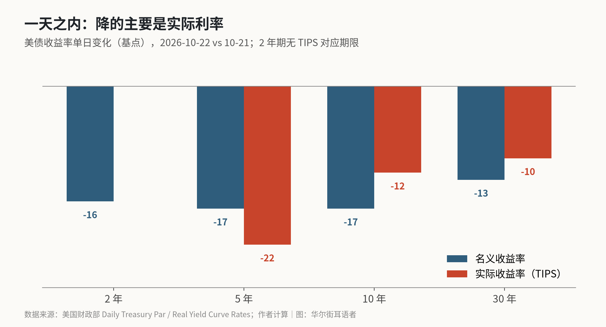
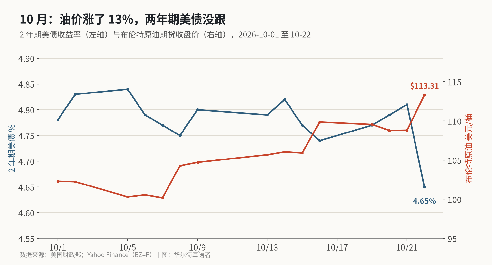

油价涨了 4%，两年期美债收益率却跌了 16 个基点：债市把油价当成了增长问题
10 月 22 日布伦特原油收 113.31 美元，美债收益率全线大跌，10 年期单日跌幅是 2023 年硅谷银行倒闭以来最大。拆开名义利率和实际利率看，下来的主要是实际利率，通胀预期几乎没动；10 月加息的概率从一个月前的 55% 降到 7%。
周四（10 月 22 日），两个市场走出了相反的方向。布伦特原油期货从 108.82 美元涨到 113.31 美元，涨 4.1%；同一天，美国 2 年期国债收益率从 4.81% 跌到 4.65%，10 年期从 5.13% 跌到 4.96%，9 月 22 日以来第一次收在 5% 以下。
按教科书的逻辑，油价上涨会推高通胀预期，债券收益率应该往上走，美联储也更有理由加息。周四的情况正好相反。
我想算清楚的是：收益率这一跌，跌的是通胀预期，还是实际利率？背后市场在押什么？办法是把美国财政部每天公布的名义收益率曲线和实际收益率（TIPS）曲线放在一起，看各期限各自变了多少。
先说结论：这次下跌主要是实际利率在跌，通胀预期基本没动。市场的意思是“增长要变差了，美联储不用再加那么多息”，而不是“通胀问题解决了”。
一天之内：降的主要是实际利率

财政部数据，10 月 22 日对比 10 月 21 日：
- 名义收益率：2 年期 −16 个基点，5 年期 −17，10 年期 −17，30 年期 −13；
- 实际收益率：5 年期 −22 个基点，10 年期 −12，30 年期 −10。
名义收益率约等于实际收益率加上通胀预期（盈亏平衡通胀率）。5 年期实际利率跌得比名义利率还多，10 年期实际利率贡献了大部分跌幅。按财政部这两条曲线粗算，5 年期通胀预期反而升了约 5 个基点，10 年期降了约 5 个基点。
路透援引的市场报价给出的方向稍有不同：5 年期盈亏平衡通胀率从 2.413% 降到 2.381%，10 年期在 2.333%。两个口径不完全一样（财政部是下午的报价收集，当天还有一场 5 年期 TIPS 拍卖），但结论相同：通胀预期的变化都在 5 个基点以内，这次下跌的大头来自实际利率。
路透的数字和财政部的大体对得上：10 年期收益率当天跌 19.3 个基点到 4.953%，是 2023 年 3 月 10 日（硅谷银行倒闭那天）以来最大单日跌幅；2 年期跌 18.5 个基点到 4.638%。10 年期在 10 月 7 日一度到过 5.3645%。
为什么油价涨、收益率反而跌

拉长到整个 10 月看，这种背离不是一天的事。10 月 7 日布伦特收 100.20 美元，到 22 日涨到 113.31 美元，涨 13.1%；同期 2 年期美债收益率从 4.77% 降到 4.65%。
我的理解是，市场对油价的解读变了。油价在 100 美元以下时，交易员把它当通胀问题，押美联储继续加息。油价继续往 110 美元以上走，市场开始担心另一件事：消费者和企业扛不住，经济会减速。到这一步，高油价更像对增长的“税”，而不是通胀的推手。
周四还有一个放大器：AI 股大跌。高盛 Delta One 交易团队的观点在 X 上被转述为：AI 板块走弱，让市场重新评估 AI 资本开支周期，既减少了未来公司发债的供给压力，也越来越变成对经济增长的负面冲击。⚠️ 这是二手转述，我没看到原始报告。但逻辑上说得通：如果 AI 资本开支是今年美国增长的重要支撑，它一旦放缓，增长预期就要下调。
资金的流向也对得上。Sage Advisory 的 Urano 对路透说，“避险交易正在占上风”。同一天黄金跌了 2.6%，说明这不是普通的避险，资金更多是去了美债。
加息押注几乎退场
利率期货的变化更直接。路透援引 CME FedWatch：市场认为美联储 10 月底加息的概率是 7.2%，一周前是 27.7%，一个月前是 55.4%。预测市场 Kalshi 上，10 月加息合约的价格从 12 美分降到 6 美分（financialmarkets.com 报道）。
就业数据并不弱。当周首次申请失业救济人数减少 6,000 人至 19.4 万，低于预期的 20 万。X 上有帖子说这“接近 57 年低点”。⚠️ 这个说法我没能核实，路透的报道只说低于预期，这里不采用。
就业不弱、油价在涨，加息概率却跌到个位数。这说明市场现在更关心增长的下行风险，而不是通胀的上行风险。
跟昨天的判断对一下
我昨天写过，两年期美债收益率比联邦基金利率（3.75%–4.00%，中值 3.875%）高出约 94 个基点，市场押的加息比经济学家多。周四这个差距缩到约 77 个基点（4.65% − 3.875%）。一天时间，“比经济学家更鹰”的那部分溢价去掉了大约五分之一。
这不等于美联储不会再加息。路透 10 月 20 日调查里的经济学家都预计 12 月还会加一次。变化在于，市场不再押“比经济学家更多”的加息了。
风险在哪
反方的观点也要摆出来。Peter Schiff 在 X 上说，衰退不会让通胀下来，反而会推高通胀，“所以债券的上涨不会持续”。如果油价继续涨，下一次 CPI 又偏热，市场会重新押加息，短端收益率会很快弹回去。
另一个信号是 5 年期 TIPS 拍卖。据 financialmarkets.com，这次拍卖的投标倍数是 2.41，上次是 2.61，中标收益率 2.367%，需求偏弱。实际利率一天跌了 22 个基点，新发的 TIPS 却没那么好卖，说明这一轮下跌里有不少是短线资金的避险，不一定能持续。
收益率这轮下跌能走多远
周四的债市在交易“增长要变差、加息不用再加”，而不是“通胀退了”。这让债券短期有支撑，但只要油价还在 110 美元以上，通胀这个问题就没走，这一轮下跌能走多远，要看增长数据先坏还是通胀数据先热。
能更早给出答案的有三处。
第一，10 月 28 日美联储会后声明。会议大概率按兵不动，关键是声明里怎么写油价和增长。
第二，油价和 2 年期收益率还会不会继续背离。如果油价涨、短端继续跌，说明市场真的在交易“增长冲击”；如果两者重新同向，就说明通胀担忧回来了。
第三，下周大型科技公司的财报。AI 资本开支如果维持，增长担忧会缓解，长端收益率可能会回升一部分。
X 上怎么看
结论 · 多空分歧：3 位看多，3 位看空，5 位中性/分歧。都看到债市在交易增长放缓；分歧在于油价不跌的情况下，这波下行能不能撑住。
▲ 看多3 位
▼ 看空3 位
● 分歧或中性5 位
10 年期美债单日跌 0.193 个百分点至 4.952%，是 2023 年 3 月 10 日（硅谷银行倒闭）以来最大单日跌幅。
观点为 X 用户当日公开帖子的中文摘要，忠于原文但有删减；标「未核实」的为预测、个人推测或单一来源说法。立场为人工判断。
数据来源
- https://www.theglobeandmail.com/investing/article-us-bond-yields-plunge-as-fears-about-sustaining-ai-boom-resurface/
- https://www.financialmarkets.com/article/oil-hit-113-bonds-rallied-like-it-was-a-slowdown
- https://www.wsj.com/livecoverage/stock-market-today-dow-sp-500-nasdaq-10-22-2026/card/one-thing-i-m-watching-treasury-yields-disconnect-from-oil-prices-ej4fWLacZld4bjlmgYeV
- https://www.investing.com/news/economy-news/fed-to-skip-october-but-raise-rates-again-in-december-nearly-all-economists-say-reuters-poll-4960095
- https://x.com/NickTimiraos/status/2113390420923441663
- https://x.com/bboczeng/status/2113300231194595698
- https://x.com/PeterSchiff/status/2113352498203197452
- https://x.com/Polymarket/status/2113265933263528342